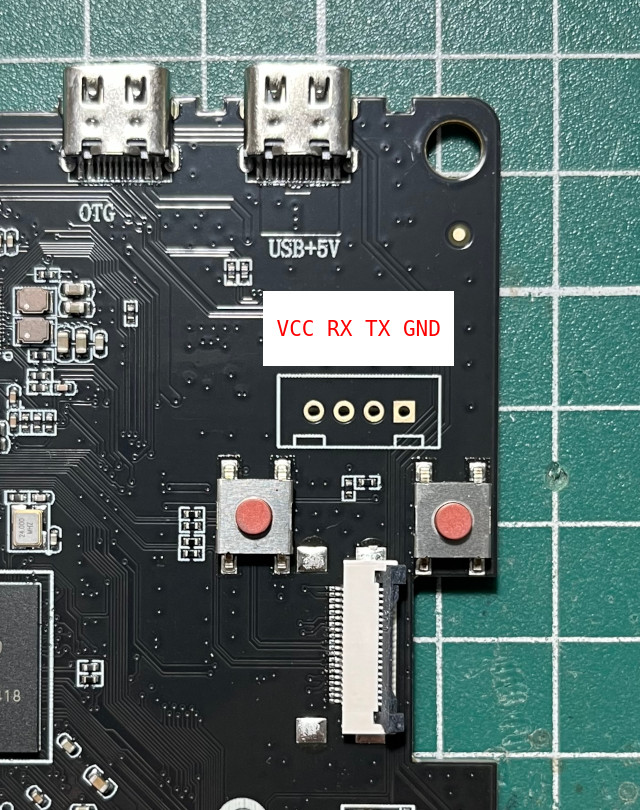
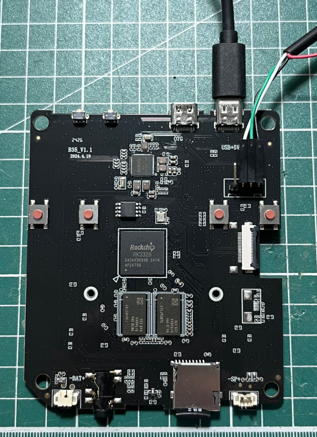

腳位


U-Boot 2017.09-00037-g0e26e35cb1 (Aug 29 2021 - 10:49:26 -0400)
Model: Rockchip RK3326 ODROID-GO Advanced
PreSerial: 2
DRAM: 992 MiB
Sysmem: init
Relocation Offset is: 3dabc000
Using default in SDcard
dwmmc@ff370000: 1 (SD)
Bootdev(atags): mmc 1
MMC1: Legacy, 50Mhz
PartType: DOS
init_resource_list: failed to get resource part, ret=-1
dtb in resource read fail, try dtb in spi flash
sfc nor id: 85 20 18
Device 1: GUID Partition Table Header signature is wrong: 0xFFFFFFFFFFFFFFFF != 0x5452415020494645
Repair the backup gpt table OK!
Vendor: 0x0308 Rev: V1.00 Prod: rkflash-SpiNor
Type: Hard Disk
Capacity: 16.0 MB = 0.0 GB (32768 x 512)
... is now current device
spinor read: device 1 block # 8192, count 200 ... 200 blocks read: OK
I2c speed: 400000Hz
PMIC: RK8170 (on=0x40, off=0x00)
vdd_logic 1100000 uV
vdd_arm 1100000 uV
*** Warning - bad CRC, using default environment
In: serial
Out: serial
Err: serial
Model: ODROID-GO2 v1.1 for linux based on Rockchip rk3326
rockchip_get_boot_mode: Could not found misc partition
boot mode: None
CLK: (sync kernel. arm: enter 600000 KHz, init 600000 KHz, kernel 600000 KHz)
apll 600000 KHz
dpll 664000 KHz
cpll 24000 KHz
npll 1188000 KHz
gpll 1200000 KHz
aclk_bus 200000 KHz
hclk_bus 150000 KHz
pclk_bus 100000 KHz
aclk_peri 200000 KHz
hclk_peri 150000 KHz
pclk_pmu 100000 KHz
** Unable to read file manufacture **
Rockchip UBOOT DRM driver version: v1.0.1
Using display timing dts
Detailed mode clock 17000 kHz, flags[a]
H: 0320 0450 0454 0584
V: 0480 0482 0483 0485
bus_format: 100e
final DSI-Link bandwidth: 450 Mbps x 1
0
switch to partitions #0, OK
mmc1 is current device
reading boot.ini
1150 bytes read in 4 ms (280.3 KiB/s)
## Executing script at 00800800
reading Image
14577672 bytes read in 640 ms (21.7 MiB/s)
reading uInitrd
13194771 bytes read in 580 ms (21.7 MiB/s)
reading rk3326-odroidgo2-linux-v11.dtb
89062 bytes read in 9 ms (9.4 MiB/s)
## Loading init Ramdisk from Legacy Image at 01100000 ...
Image Name: uInitrd
Image Type: ARM Linux RAMDisk Image (gzip compressed)
Data Size: 13194707 Bytes = 12.6 MiB
Load Address: 00000000
Entry Point: 00000000
Verifying Checksum ... OK
## Flattened Device Tree blob at 01f00000
Booting using the fdt blob at 0x1f00000
'reserved-memory' region@110000: addr=110000 size=f0000
Loading Ramdisk to 3101a000, end 31caf5d3 ... OK
Loading Device Tree to 0000000031001000, end 0000000031019be5 ... OK
reserve drm-loader-logo offset = 58492
reserve drm-logo mem = 000000003de00000, size = 3736832
Adding bank: 0x00200000 - 0x08400000 (size: 0x08200000)
Adding bank: 0x0a200000 - 0x40000000 (size: 0x35e00000)
Total: 4123.945 ms
Starting kernel ...
[ 0.102486] genirq: Setting trigger mode 8 for irq 170 failed (0xffffff80083703d0)
[ 0.552471] rk-vcodec vpu_combo: failed on clk_get clk_cabac
[ 0.561335] rk-vcodec vpu_combo: could not find power_model node
[ 0.584119] rockchip-drm display-subsystem: failed to bind ff450000.dsi (ops 0xffffff8008ad4e78): -517
[ 0.597114] panel-simple-dsi ff450000.dsi.0: failed to get power regulator: -517
[ 0.605171] mali ff400000.gpu: Failed to get regulator
[ 0.610352] mali ff400000.gpu: Power control initialization failed
[ 0.670735] rk817-battery rk817-battery: fb_temperature missing!
[ 0.676822] rk817-battery rk817-battery: energy_mode missing!
[ 0.682604] rk817-battery rk817-battery: zero_reserve_dsoc missing!
[ 0.715058] rk817-charger rk817-charger: power_dc2otg missing!
[ 0.720962] rk817-charger rk817-charger: otg5v_suspend_enable missing!
[ 0.752578] rk_tsadcv2_temp_to_code: Invalid conversion table: code=4095, temperature=2147483647
[ 0.782573] cpu cpu0: failed to find power_model node
[ 0.867266] rockchip-dmc dmc: unable to get devfreq-event device : dfi
[ 0.878454] rksfc_base v1.1 2016-01-08
[ 0.892786] rockchip-drm display-subsystem: failed to bind ff450000.dsi (ops 0xffffff8008ad4e78): -517
[ 0.903269] panel-simple-dsi ff450000.dsi.0: actual backlight_supply exists
[ 0.911355] mali ff400000.gpu: Failed to get leakage
[ 0.922387] rockchip-dmc dmc: Failed to get leakage
[ 0.928011] rockchip-dmc dmc: failed to get vop bandwidth to dmc rate
[ 0.934479] rockchip-dmc dmc: failed to get vop pn to msch rl
[ 0.956559] devfreq dmc: Couldn't update frequency transition information.
[ 0.966339] asoc-simple-card rk817-sound: ASoC: no sink widget found for MIC_IN
[ 0.973670] asoc-simple-card rk817-sound: ASoC: Failed to add route Mic Jack -> direct -> MIC_IN
[ 0.982463] asoc-simple-card rk817-sound: ASoC: no source widget found for HPOL
[ 0.989781] asoc-simple-card rk817-sound: ASoC: Failed to add route HPOL -> direct -> Headphone Jack
[ 0.998922] asoc-simple-card rk817-sound: ASoC: no source widget found for HPOR
[ 1.006242] asoc-simple-card rk817-sound: ASoC: Failed to add route HPOR -> direct -> Headphone Jack
[ 1.017924] get_framebuffer_by_node: failed to get logo,offset
[ 1.019259] devfreq ff400000.gpu: Couldn't update frequency transition information.
[ 1.031461] rockchip-drm display-subsystem: failed to show loader logo
e2fsck 1.45.3 (14-Jul-2019)
Superblock last mount time (Mon Sep 11 22:46:47 2017,
now = Sat Aug 5 09:00:07 2017) is in the future.
Fix? yes
Superblock last write time (Thu Apr 11 16:28:36 2019,
now = Sat Aug 5 09:00:07 2017) is in the future.
Fix? yes
Pass 1: Checking inodes, blocks, and sizes
Deleted inode 52 has zero dtime. Fix? yes
Pass 2: Checking directory structure
Pass 3: Checking directory connectivity
Pass 4: Checking reference counts
Pass 5: Checking group summary information
Block bitmap differences: -308224
Fix? yes
Free blocks count wrong for group #9 (9758, counted=9759).
Fix? yes
Free blocks count wrong (1292098, counted=1292095).
Fix? yes
Inode bitmap differences: -52
Fix? yes
Free inodes count wrong for group #0 (5417, counted=5418).
Fix? yes
Free inodes count wrong (544984, counted=544983).
Fix? yes
root: ***** FILE SYSTEM WAS MODIFIED *****
root: 126761/671744 files (0.2% non-contiguous), 1370998/2663093 blocks
fsck exited with status code 1
[ 10.165573] cgroup: cgroup2: unknown option "nsdelegate"
[ 10.690467] systemd[1]: /etc/systemd/system/audiopath.service:7: Failed to parse service restart specifier, ignoring: yes
[ 10.770839] systemd[1]: systemd-journald-dev-log.socket: Socket service systemd-journald.service not loaded, refusing.
[ 10.781569] systemd[1]: Failed to listen on Journal Socket (/dev/log).
[FAILED] Failed to listen on Journal Socket (/dev/log).
See 'systemctl status systemd-journald-dev-log.socket' for details.
[ OK ] Reached target Remote File Systems.
[ OK ] Listening on udev Kernel Socket.
[ OK ] Started Forward Password R…uests to Wall Directory Watch.
[ OK ] Listening on udev Control Socket.
[ 10.822034] systemd[1]: systemd-journald.socket: Socket service systemd-journald.service not loaded, refusing.
[ 10.837479] systemd[1]: Failed to listen on Journal Socket.
[FAILED] Failed to listen on Journal Socket.
See 'systemctl status systemd-journald.socket' for details.
Starting Create list of re…odes for the current kernel...
Starting udev Coldplug all Devices...
[ OK ] Reached target Swap.
[ OK ] Created slice system-systemd\x2dfsck.slice.
Starting Set the console keyboard layout...
[ OK ] Created slice system-serial\x2dgetty.slice.
Starting Remount Root and Kernel File Systems...
Starting Load Kernel Modules...
[ OK ] Created slice User and Session Slice.
[ OK ] Reached target Slices.
Mounting Kernel Debug File System...
[ OK ] Started Create list of req… nodes for the current kernel.
[ OK ] Started Load Kernel Modules.
[ OK ] Mounted Kernel Debug File System.
Mounting Kernel Configuration File System...
Mounting FUSE Control File System...
Starting Apply Kernel Variables...
[ OK ] Mounted Kernel Configuration File System.
[ OK ] Mounted FUSE Control File System.
[ OK ] Started Remount Root and Kernel File Systems.
Starting Load/Save Random Seed...
Starting Create System Users...
[ OK ] Started udev Coldplug all Devices.
[ OK ] Started Load/Save Random Seed.
[ OK ] Started Apply Kernel Variables.
[ OK ] Started Create System Users.
Starting Create Static Device Nodes in /dev...
[ OK ] Started Create Static Device Nodes in /dev.
Starting udev Kernel Device Manager...
[ OK ] Started Set the console keyboard layout.
[ OK ] Reached target Local File Systems (Pre).
[ OK ] Started udev Kernel Device Manager.
Starting Show Plymouth Boot Screen...
Ubuntu 19.10 rgb10 ttyFIQ0
rgb10 login: